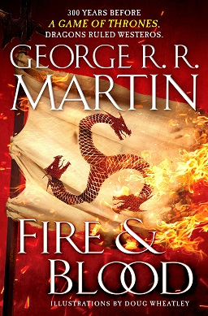

Fire and Blood
- Auteur: George R.R. Martin
- Catégorie: Fantasy
- Éditeur: Bantam Books
- Date de publication: 2018
- Nombre de pages: 736
- Commentaire: Une plongée fascinante dans l'histoire des Targaryen.
- État: Non Lu
Synopsis
"Au septième jour, une nuée de corbeaux jaillitdes tours de Peyredragon pour propager la parole de lord Aegon aux Sept Couronnes de Westeros. Ils volaient vers les sept rois, vers la Citadelle de Villevieille, vers les seigneurs tant petits que grands. Tous apportaient le même message : à compter de ce jour, il n'y aurait plus à Westeros qu'un roi unique." Trois cents ans avant les événements du Trône de fer, Feu et sang raconte l'unification des sept royaumes.